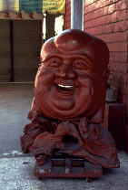
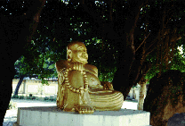
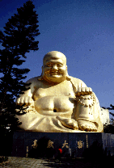
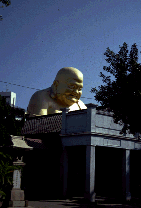
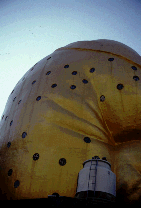
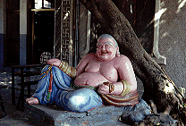

宝覚寺/台中
  
ここの大仏は30.1メートルの布袋様。建立は1975年、当初はコンクリート打ち放しだったが鳥のフン害が酷く地元民には「鼻くそ大仏」といわれる羽目に。そこで1989年に金ピカに塗り替えられ、今の姿にいたったそうな。
何とも可愛らしい顔である。赤ちゃん顔の大仏さんも悪くないものだ。
大仏さんのとなりには戦前の日本人の遺骨＆遺影＆遺品が棚にズラリと並ぶ納骨堂があり、南国ののんびりとした雰囲気が漂う境内でディープな異彩をはなっている。
この大仏さん、以前は内部に博物館がありへその穴から外が覗けたらしいのだが、現在は内部の拝観はやっていない。残念。
ただし当時を忍ばせる物件として大仏の背中に多数の卍印の丸窓が空いている。なんか「見栄をはらずに〜効き目ッ、貼れえ〜」って感じ。
  
次のスポットへGO!
台湾大仏列伝のページへ
珍寺大道場 HOME